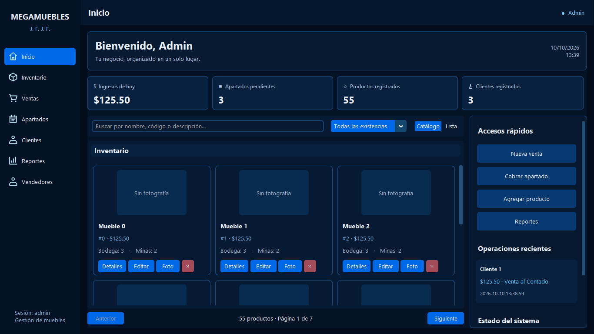
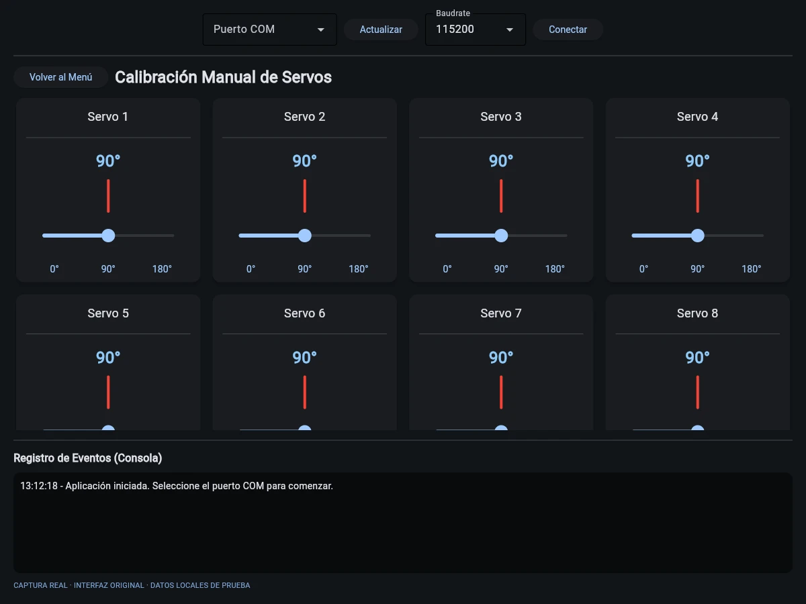
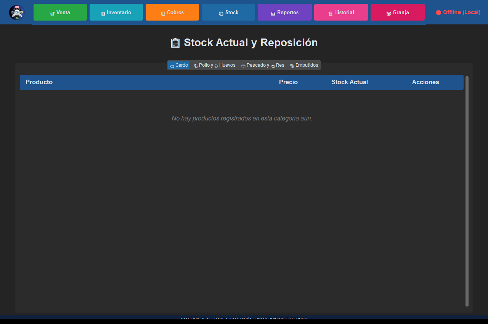
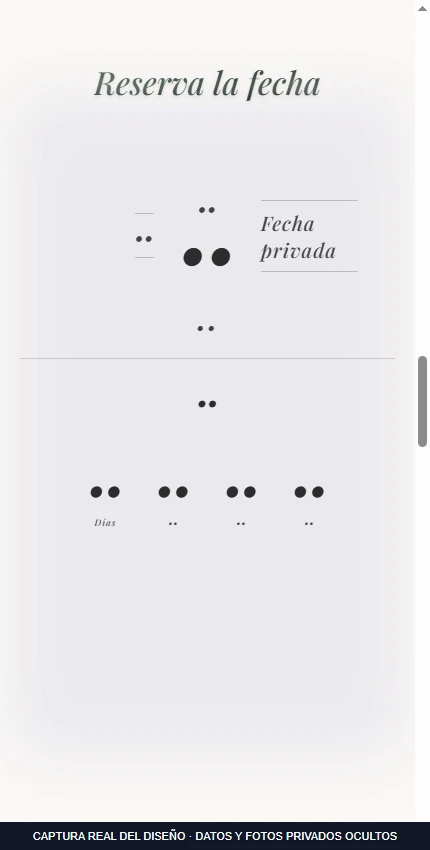
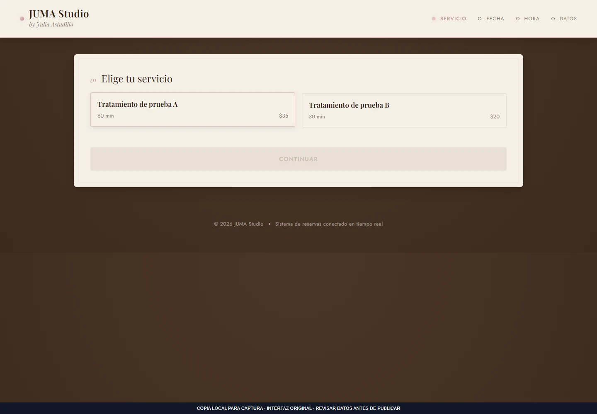
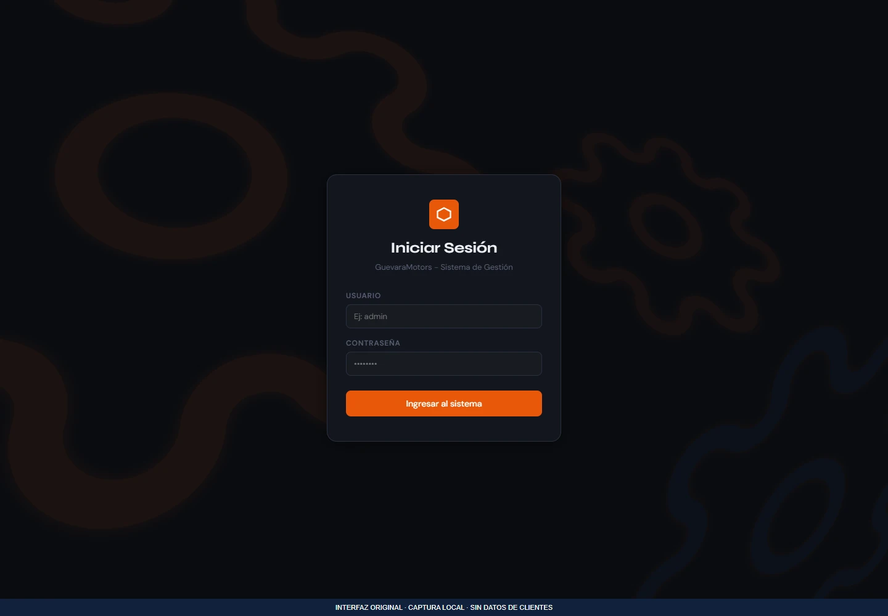
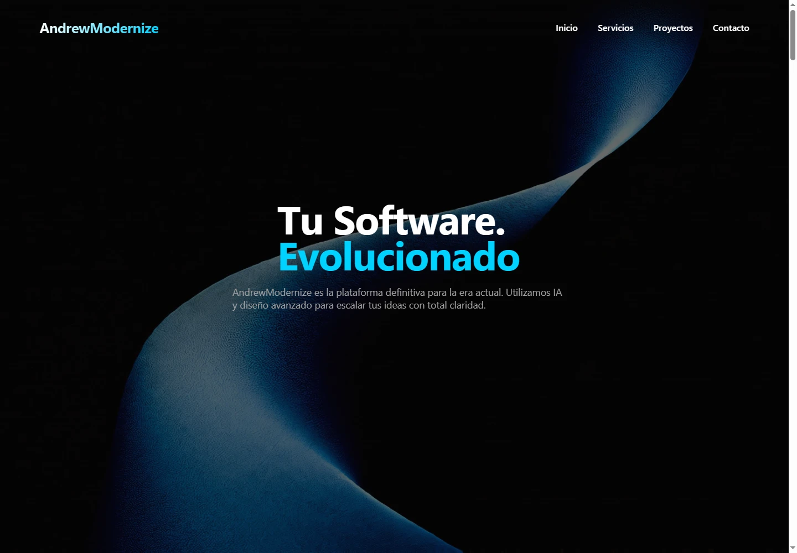

MEGAMUEBLES
Gestión de muebles que reúne inventario, ventas, apartados y abonos en una aplicación de escritorio.
Soy Franklin Lema. Desarrollo software y experiencias web con una base en electricidad y automatización.
Ver proyectos
Gestión de muebles que reúne inventario, ventas, apartados y abonos en una aplicación de escritorio.

Plataforma web y administrador de escritorio para empresas, suscripciones y puntos de venta.

Interfaz de calibración que conecta controles de ángulo con un ESP32 mediante comunicación serial.
Explora los sistemas, interfaces y experimentos que he elegido compartir.
12 proyectos seleccionados
12 proyectos
Gestión e inventarios
Gestión de muebles que reúne inventario, ventas, apartados y abonos en una aplicación de escritorio.
Gestión e inventarios
Sistema de escritorio para integrar ventas, inventario, cobros y gestión de una granja porcina.

Sistemas empresariales
Plataforma web y administrador de escritorio para empresas, suscripciones y puntos de venta.
Aplicaciones web
Experiencia web para presentar un evento, sus ubicaciones y la confirmación de asistencia.

Electricidad y automatización
Interfaz de calibración que conecta controles de ángulo con un ESP32 mediante comunicación serial.
Aplicaciones web
Flujo de reservas por sucursal, servicio, día y horario, acompañado de un panel de administración.

CRM y clientes
Aplicación para organizar clientes, vehículos, órdenes de trabajo, repuestos y registros de facturas de un taller.

Aplicaciones web
Colección de interfaces comerciales para mueblería, panadería, farmacia, veterinaria y carnicería.

Aplicaciones web
Sitio gastronómico con animación por desplazamiento, menú y carrito persistente.

CRM y clientes
Maqueta de gestión de taller con navegación entre módulos y formularios de vehículos y órdenes.

Aplicaciones web
Exploración de una página de servicios con escena tridimensional y animaciones por desplazamiento.

Aplicaciones web
Demostración de presentación de tratamientos con animaciones y selección visual.
Prueba otra tecnología o cambia los filtros.
“Terminado” indica la carpeta de origen, no una verificación de producción. Las fichas detallan el alcance y las dependencias de cada proyecto.
Soy Franklin Andrés Lema Guevara, desarrollador de software independiente. Creo sistemas de gestión, ventas e inventarios, aplicaciones web y herramientas que ayudan a organizar el trabajo diario. En este portafolio puedes explorar tanto los sistemas como sus interfaces y sus límites reales.
Mi formación en Tecnología Superior en Electricidad, en el Instituto Superior Universitario Central Técnico, complementa el código con conocimientos de instalaciones, motores, PLC, HMI y automatización. Soy egresado y estoy en proceso de titulación. Me interesa conectar una interfaz clara con los procesos que hay detrás, desde una venta hasta la comunicación serial con un servomotor.
Durante la carrera aprendí programación en C++, lenguaje Ladder y otras formas de programación aplicadas al control y la automatización. Ese acercamiento despertó mi interés por el software y me impulsó a seguir aprendiendo de forma autodidacta, explorando nuevos lenguajes, herramientas y el diseño y desarrollo web.
Tecnologías identificadas en los proyectos
y conocimientos de mi formación técnica.
Aplicaciones de escritorio, interfaces web, APIs y gestión de información.
Conocimientos técnicos que conectan procesos físicos y herramientas digitales.
Conocimientos declarados de formación. La ficha describe la evidencia de software y firmware disponible.
Para proyectos de software,
colaboraciones y oportunidades de empleo.